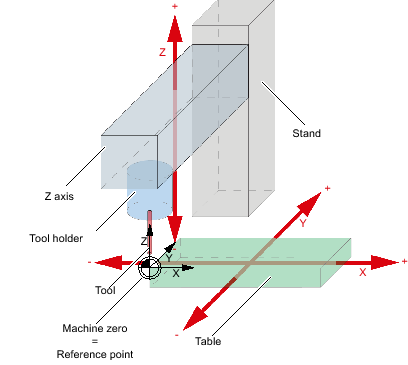
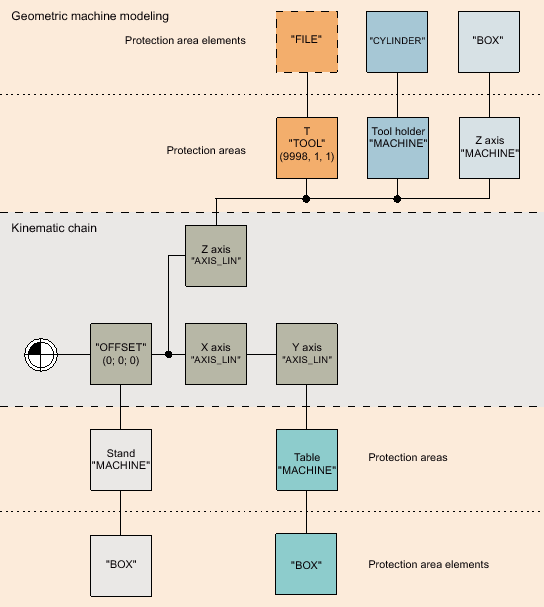

General Information
The following example contains the machine model elements of a simple 3-axis milling machine for a simplified kinematic chain.
Machine model elements
The following elements are defined for the example of the 3-axis milling machine:
Element | Color | Direction of movement |
|---|---|---|
Table | Green | X, Y |
Z axis | Gray | Z |
Column | Gray | None |
Tool holder | Blue | Z |
Tool (when used) | red | Z |
Machine zero | None | None |
Geometry
Each machine-model element has a defined geometry and an offset vector to the element center starting with the machine zero:

The following offset vectors are defined for the example of the 3-axis milling machine:
Element | Offset vector |
|---|---|
Tool holder | Vtool = (0; 0; 25) |
Z axis | VZA = (0; 200; 130) |
Column | VS = (0; 570; 350) |
Table | VT = (100; 50; -25) |
Structure of the geometric machine modeling
The kinematic chain begins with the first offset kinematic element that represents the machine zero. The other kinematic elements form the linear axes X, Y and parallel Z. The protection area is used to define the basic bodies of the machine and tools. The movable protection areas are linked with the associated linear axis; the unmovable protection area is linked with the offset.
